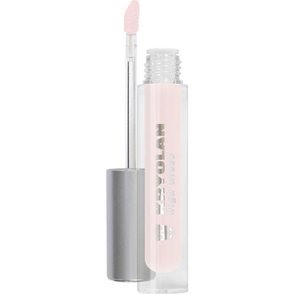

Na batalha do gloss e batom, de qual lado você está?
Preferimos gloss! Muitos dizem que eles são melentos e por isso preferem batons, mas isso acontece quando você opta por marcas de má qualidade. Mas não se engane, um gloss não precisa ser caro para ser bom, um exemplo disso são os da Max Love, uma ótima marca com qualidade e custo benefício. Mas para quem gosta de adquirir peças com ainda maior qualidade sem se importar com os preços também temos ótimas recomendações, entre elas, Dior, com custo médio de R$260,00 e Chanel, com preços de até R$750,00.
